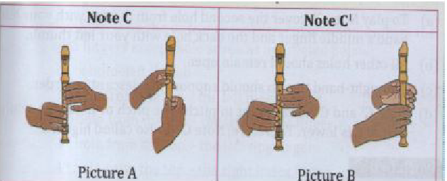
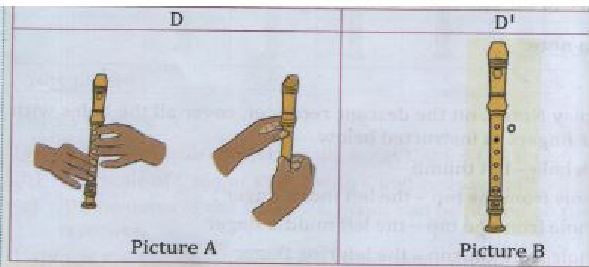
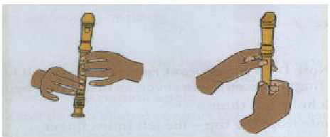
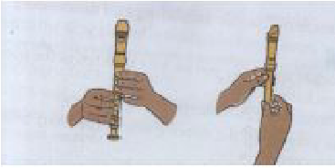
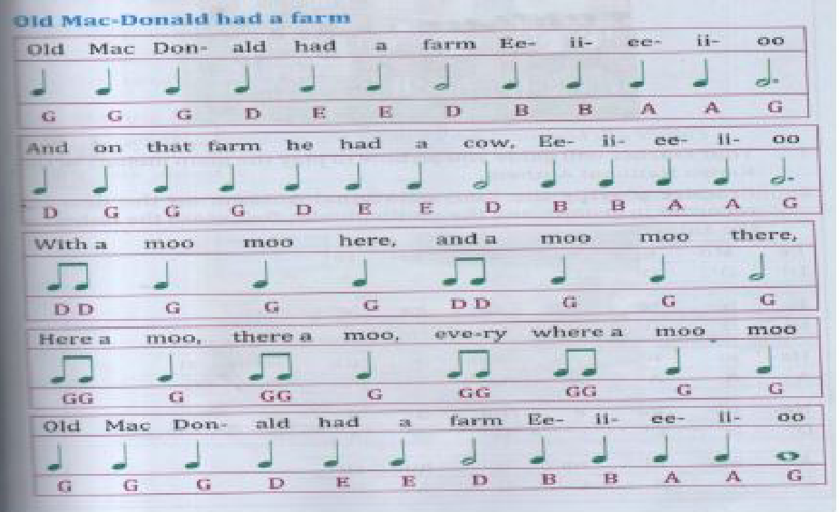

Playing the Scale of C Major
A C major scale consists of the notes C, D, E, F, G, A, B, C1. The scale of C major starts with C and ends with C1. All the notes of the scale of C major can be played on the descant recorder.
Playing the Notes C and C1
To play note C on the descant recorder, cover the following holes with your fingers:
- A. Back hole – left thumb
- B. 1st hole from the top – the left index finger
- C. 2nd hole from the top – the left middle finger
- D. 3rd hole from the top – the left ring finger
- E. 4th hole from the top – the right index finger
- F. 5th hole from the top – the right middle finger
- G. 6th hole from the top – the right ring finger
- H. 7th hole from the top – the right little finger
The right hand thumb should be used to support the descant recorder.
Note C has a low sound or pitch.
To play note C1, cover the second hole from the top with your left hand's middle finger and the back hole with your left thumb. All other holes should remain open. The right hand thumb should support the descant recorder.
Note C1 and C are different in pitch. The pitch of C1 is high, while C is lower. C1 is called the higher C.
Playing the Lower D and D1
To play note D on the descant recorder, cover all holes from the top with fingers except hole seven:
- Back hole – left thumb
- 1st hole from the top – the left index finger
- 2nd hole from the top – the left middle finger
- 3rd hole from the top – the left ring finger
- 4th hole from the top – the right index finger
- 5th hole from the top – the right middle finger
- 6th hole from the top – the right ring finger
The right hand thumb should be used to support the descant recorder. Hole seven is not covered when playing note D.
To play note D1, cover the second hole from the top with your left hand's middle finger, and leave the back hole open. All other holes should remain open. Move the left thumb slightly below the back hole to support the recorder together with the right hand thumb.
The pitch of D1 is high, while D is lower. D1 is called the higher D.
To play note D1, cover the second hole from the top with your left hand's middle finger, and leave the back hole open. All other holes should remain open. Move the left thumb slightly below the back hole to support the recorder together with the right hand thumb.
The pitch of D1 is high, while D is lower. D1 is called the higher D.
Playing Note E
To play note E on the descant recorder, cover all holes from the top except holes six and seven with your fingers:
- Back hole – left thumb
- 1st hole from the top – the left index finger
- 2nd hole from the top – the left middle finger
- 3rd hole from the top – the left ring finger
- 4th hole from the top – the right index finger
- 5th hole from the top – the right middle finger
The right hand thumb should be used to support the descant recorder.
The sixth and seventh holes are left open.
Playing Note F
To play note F on the descant recorder, close the top four holes with your fingers:
- 1st hole from the top – the left index finger
- 2nd hole from the top – the left middle finger
- 3rd hole from the top – the left ring finger
- 4th hole from the top – the right index finger
- 6th hole from the top – the right middle finger
- 7th hole from the top – right little finger
The right hand thumb should be used to support the descant recorder.
Note: All holes are closed except the 5th hole from the top.
Playing Simple Melodies on the Descant Recorder
Song: Old MacDonald Had a Farm
Old MACDONALD had a farm
E-I-E-I-O
And on his farm he had a cow
E-I-E-I-O
With a moo moo here And a moo moo there
Here a moo, there a moo Everywhere a moo moo
Old MacDonald had a farm
E-I-E-I-O
Old MACDONALD had a farm
E-I-E-I-O And on his farm he had a pig
E-I-E-I-O
With a oink oink here And a oink oink there

Playing the Kenyan National Anthem on a Descant Recorder
Ee Mu - ngu ngu -vu ye - tu
D1 D1 D1 C1 G A
I le te ba ra ka kw etu
D1 D1 D1 C G A A
Ha ki i we nga o na mli nzi
A A A A D1 C1 A A G
Na tu ka e na u nd ugu
D1 D1 C1 C1 G G A E
A ma ni na u hu ru
E A A G G A F
Ra ha tu pa te na u sta wi
E A A A A G G A A.

Playing the Descant Recorder in a Duet
Song: Baa, Baa, Black Sheep
Baa, baa, black sheep, have you any wool?
Yes, sir, yes, sir, three bags full
One for the master and one for the dame
One for the little boy who lives down the lane
Baa, baa, black sheep, have you any wool?
Yes, sir, yes, sir, three bags full
One for the master and one for the dame